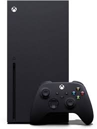
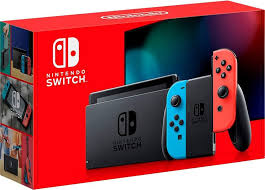

A PlayStation é uma marca de videogames criada pela Sony Interactive Entertainment. Desde o lançamento do primeiro PlayStation em 1994, a marca se tornou uma das mais reconhecidas no mundo dos jogos. Os principais consoles da linha incluem:
PlayStation (PS1): Lançado em 1994, revolucionou o mercado com gráficos 3D e uma vasta biblioteca de jogos.
PlayStation 2 (PS2): Lançado em 2000, é o console mais vendido de todos os tempos, com mais de 155 milhões de unidades.
PlayStation 3 (PS3): Lançado em 2006, introduziu o Blu-ray e gráficos avançados.
PlayStation 4 (PS4): Lançado em 2013, focou em jogos sociais e streaming.
PlayStation 5 (PS5): Lançado em 2020, oferece gráficos de última geração e tempos de carregamento rápidos.
Xbox

A Xbox é uma marca de videogames criada pela Microsoft. Desde o lançamento do primeiro Xbox em 2001, a marca tem sido conhecida por sua forte integração com serviços online e gráficos poderosos. Os principais consoles da linha incluem:
Xbox: Lançado em 2001, foi o primeiro console da Microsoft e introduziu o serviço Xbox Live.
Xbox 360: Lançado em 2005, popularizou o jogo online e teve uma vasta biblioteca de jogos.
Xbox One: Lançado em 2013, focou em integração multimídia e jogos em alta definição.
Xbox Series X e Series S: Lançados em 2020, oferecem gráficos de última geração e tempos de carregamento rápidos.
Nintendo

A Nintendo é uma empresa japonesa de eletrônicos de consumo e videogames, conhecida por suas inovações e franquias icônicas. Alguns dos principais consoles da linha incluem:
Nintendo Entertainment System (NES): Lançado em 1983, revitalizou a indústria de videogames após o crash de 1983.
Super Nintendo Entertainment System (SNES): Lançado em 1990, é conhecido por seus jogos clássicos e gráficos avançados para a época.
Nintendo 64: Lançado em 1996, introduziu gráficos 3D e jogos multiplayer.
GameCube: Lançado em 2001, focou em jogos de alta qualidade e gráficos avançados.
Wii: Lançado em 2006, popularizou os controles de movimento.
Nintendo Switch: Lançado em 2017, é um console híbrido que pode ser usado como portátil ou conectado à TV.